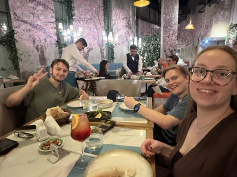
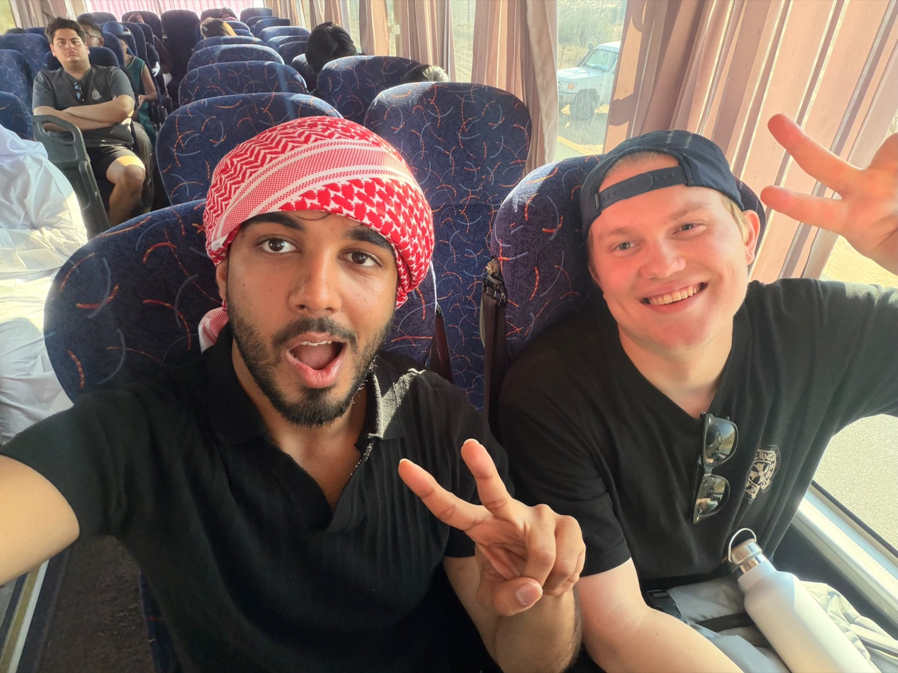
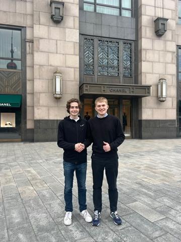

العربية للمبتدئين ١
أصدقائي
مرحباً! اسمي سفياتوسلاف.
اليوم أتكلم عن أصدقائي.
سفياتوسلاف غلاديشيف

أليكس
أليكس أمريكي، وعمره اثنتان وعشرون سنة.
طالب في الجامعةيدرس كثيراًنتكلم في المساء
أليكس صديق جيد.
أصدقائي · العربية للمبتدئين ١
٢

تيو
تيو ألماني، وعمره اثنتان وعشرون سنة.
يحب القراءةمشغول في النهارنتكلم في الليل
اللغة
الألمانية والإنجليزية
نتكلم عن الجامعة والدراسة.
أصدقائي · العربية للمبتدئين ١
٣
سوميد
سوميد بريطاني، وعمره إحدى وعشرون سنة.
يحب العمل والدراسةفي الصباح يدرسفي المساء يتكلم
نتكلم عن الجامعة وعن الحياة.
أصدقائي · العربية للمبتدئين ١
٤
بيوتر
بيوتر روسي، وعمره اثنتان وعشرون سنة.
موسكو مدينة كبيرةيدرس في الجامعةدائماً مشغول
بيوتر صديق جيد جداً.
أصدقائي · العربية للمبتدئين ١
٥
جوفي
جوفي مجرية، وعمرها ثلاث وعشرون سنة.
طالبة في الجامعةتدرس كثيراًنتكلم في الصباح والمساء
نتكلم عن الجامعة وعن أصدقائنا.
أصدقائي · العربية للمبتدئين ١
٦
أصدقائي
أنا أحب أصدقائي كثيراً، وهم مهمون في حياتي.
شكراً لكم!